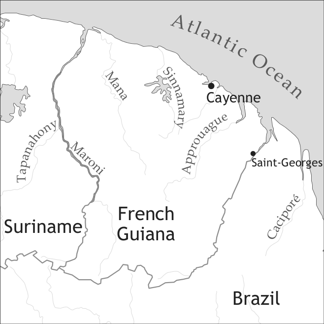

by Stefan Pfänder

Though French Guiana was a territory of French colonization in the Caribbean where attempts to settle started as early as 1604, the population did not stabilize until the end of the 17th century. We can infer that Guyanais, the French-based creole language (also known as French Guianese Creole), was formed later than its neighbouring varieties in the French Antilles.
Possibly as a result of this fact, Guyanais is closer to modern spoken varieties of French than any other creole of the region (as seen, for example, in the possessive pronoun system, in which pronouns are preposed as in French: mo kaz ‘my house’, not postposed as in Martinican Creole kay-mwen, cf. §5, example 9).
In French Guiana the total number of slaves was quite small compared to other French colonies in the same area, such as Martinique. According to historical research by William Jennings (2009), slaves were a fairly homogenous group, who spoke varieties of Ewe/Fongbe. Today, Guyanais is spoken by an estimated 64,000 speakers both in French Guiana (the French territory Guyane française) and in Brazil.
The social history of this South American French colony has been discussed in detail in Jennings (1995, 1999, 2009) and Mam-Lam-Fouck (2002), and will only briefly be summarized here, citing the recent findings of Jennings (2009: 374f.). The first settlers were not French, but Portuguese and Dutch. The latter brought the first slaves to the colony1.
“In 1660 they bought the first shipment of African captives from a Dutch slaver: 120 Gbe-speaking Fon and Ardra. ... By 1677, the slave population had reached 1,454. The colony then stagnated for want of more slave labour. Over the following three decades French Guiana’s population remained relatively stable at more or less 250 whites (mostly from Oïl regions of France), and 1,150 blacks.”
For more detailed information regarding French Guiana’s population, see Jennings’s Table 1 (2009: 379, completed with data from Mam-Lam-Fouk 2002: 30).
|
Table 1 Development of French Guiana’s population |
|||||
|
Year |
Whites |
‘Free coloureds’ (libres de couleur) |
Blacks |
Amerindians |
Total |
|
1687 |
263 |
7 |
1,157 |
101 |
1,528 |
|
1691 |
247 |
5 |
1,125 |
83 |
1,460 |
|
1700 |
352 |
11 |
1,399 |
121 |
1,883 |
|
1716 |
296 |
28 |
2,436 |
0 |
2,760 |
|
1759 |
456 |
21 |
5,571 |
0 |
6,048 |
To the best available approximation, the main contact languages in the creole formation period in the late 16th century include French and Gbe, and, with decreasing importance, also Arawak and Portuguese (Jennings 1999, 2009). Jennings (2009: 384f) remarks that “it is difficult to imagine how the first generation of locally born slaves did not acquire Gbe as their first language. It is also difficult to imagine how the first children could have encountered linguistic chaos requiring the rapid creation of a new language in an environment where there were only two languages: Gbe and French.” Jennings suggests that French-speakers came not only from France, but also from the Antilles, and Pfänder (2000b) argues for links between Guyanais and older forms of Antillean creoles. The key dates may be summarized as follows:
1654 Settlement by Portuguese and Dutch settlers
1664 French takeover of the colony
1702 First reference to Creole language
1710 French Guianese Creole becomes the principal language
of the slave community
1730s Creole becomes the native language of locally born whites
(Barrère 1743: 39–40)
Marooning affected the colony in early nineteenth-century French Guiana on a daily basis, even as late as the last decades before the abolition of slavery (Mam-Lam-Fouck 1986: 190).
The number of speakers of Guyanais is by no means clear; a good estimate might be 60,000 speakers in French Guiana (including L2 speakers) and 4,000 speakers in neighbouring Brazil (and Suriname). A recent comprehensive monograph on the “Langues de Guyane”, directed by Odile Renault-Lescure and Laurence Goury (2009) has drawn a fascinating picture of Guiana’s fairly plurilingual setting. Following the “Délégation generale à la langue francaise et aux langues de France” (DGLFLF, www.dglflf.culture.gouv.fr), Guyanais has been listed as one of the “langues de France”; it shares this status with other languages spoken in Guiana, namely (using the spelling in Renault-Lescure & Goury 2009) the late colonial language Hmong (spoken by immigrants from Laos), the pre-colonial languages Arawak, Palikur, Kalin’a, Wayana, Teko, and Wayampi, and the English-based creoles Aluku, Ndyuka, Pamaka, and Saamaka (for the latter, see Migge (2012), Nengee in vol. I and Aboh et al. (2012), Saramaccan in vol. I). An important fact here is that Guyanais is spoken by speakers of all these different languages as an L2, or – if French is L2 – as an L3. This clearly differenciates the Guiana picture from the rather bilingual situation on the French Antilles, where otherwise very similar creoles are spoken.
Moreover, it is interesting to note that a great number of second-language speakers of Guyanais have another creole language as their first language. Quantitively speaking, the most important language group is Haitian Creole speakers, followed by speakers of Martinican, Guadeloupean, and St. Lucian Creole.
Although it was said to be in danger in the early 1990s, Guynais is nowadays learned at school more and more thanks to frequent ethnographically inspired projects situated in Cayenne. One important factor in this linguistic and cultural promotion is clearly the internet (see Mair & Pfänder 2013+).
The vowel inventory of Guyanais is shown in Table 2.
|
Table 2. Vowels |
|||
|
front |
central |
back |
|
|
close |
i |
u <ou, w> |
|
|
close-mid |
e <é>, ẽ <en> |
o, õ <on> |
|
|
open-mid |
ɛ |
ɔ <ò> |
|
|
open |
a, ã <an> |
||
The consonant inventory of Guyanais is shown in Table 3.
|
Table 3. Consonants |
|||||||
|
bilabial |
labio-dental |
alveolar |
post-alveolar |
palatal |
velar |
||
|
plosive |
voiceless |
p |
t |
ʧ |
k |
||
|
voiced |
b |
d |
g |
||||
|
nasal |
m |
n |
ɲ <ny> |
ŋ <ng> |
|||
|
fricative |
voiceless |
f |
s |
ʃ <ch> |
|||
|
voiced |
v |
z |
ʒ <j> |
r |
|||
|
lateral approximant |
l |
j <y> |
w |
||||
Word stress is always on the last syllable.
An orthography has been proposed and promoted by a group of creolists called GEREC-F (Groupe d'études et de recherches en espace créolophone et francophone) in Fort-de-France and Cayenne. Since 1996, GEREC-F is a successor to the institution known as GEREC (Groupe d'études et de recherches en espace créolophone), founded in 1976, which is responsible for the promotion, codification, and teaching of the creoles in Guadeloupe, Martinique, and French Guiana. The manual that is now widely in use both for the Lesser Antilles and Guyane is La graphie créole (Bernabé 2001).
Nouns are morphologically invariable, e.g. roun wonm, dé wonm ‘one man, two men’; dlo ‘water’; douri ‘rice’. Count nouns can refer either to singular or plural entities, e.g. zwazo ‘a bird’ or ‘birds’. When plural reference is important, the optional plural marker -ya(n) can be used, especially if the noun is definite: zwazo-ya ‘the birds’, wonm-yan/moun-yan ‘men/people’.
Many nouns contain an initial element that has its orgins in the French articles le, la, les, and du, but in Creole these elements are inseparable and function as part of the root, e.g. zorey ‘ear(s)’ (< French les oreilles) zwazo ‘bird’ (< French les oiseaux), dlo ‘water’ (< French de l’eau).
Natural gender can be expressed by adding mal (or mouché) ‘male’ and fimèl (ou manman) ‘female’ to a given noun:
Generic nouns are zero-marked, e.g.
The indefinite article (r)oun occurs before the noun, e.g.
The definite article occurs after the noun. There is allomorphic variation in this particle, depending on the phonemes of the final syllable; the forms are -a (singular)/ -ya (plural) and -an/-yan when following /n/ or /m/:
Unlike French, in Guyanais there is only one demonstrative, sa...a, where sa precedes the noun and -a follows it (cf. French ce ...-là), e.g.
In the plural, the demonstrative is sa ...-ya, as in sa liv-ya. Sa-a can be used not only adnominally, but also pronominally, as in the following example:
There are three sets of personal pronouns – subject pronouns, object pronouns, and adnominal possessive pronouns – which differ only slightly from each other; see Table 4. The main differences can be found in the 2nd and 3rd person singular.
|
Table 4. Personal pronouns |
|||
|
subject |
object |
adnominal possessives |
|
|
1sg |
mo |
mo |
mo |
|
2sg |
to/ou |
to/ou |
to |
|
3sg |
i |
l(i) |
so |
|
1pl |
nou |
nou |
nou |
|
2pl |
zòt |
zòt |
zòt |
|
3pl |
yé |
yé |
yé |
There is no gender distinction in 3SG: i/li/so refers both to male and female referents. Some speakers use misyé and madanm as 3sg pronouns; these forms seem to grammaticalize in the smaller townships, but are stigmatized in Cayenne.
Adnominal possessive pronouns precede the noun, e.g.
Independent possessive pronouns consist of the possessives and a lexicalized form par (< French part ‘part’):
(10) mopa, topa, sopa
‘mine’, ‘yours’, ‘hers/his’
Possessor noun phrases follow the possessed nouns with no marking, with or without the postposed definite article that marks the whole noun phrase as definite:
or
Adjectives follow the noun (oun wonm troumantan [indf man trouble.making] ‘a trouble-making man’), with the exception of short adjectives just as in French:
In the comparative construction expressing inequality, the adjective is preceded by pli…ki ‘more…than’ in mesolectal varieties:
In the basilect, the verb pasé ‘surpass’ is selected:
Like many other creoles, Guyanais has preverbal markers expressing tense, aspect, and mood, summarized in Table 5 (see also Pfänder 2000a, b, c). There is also a postverbal particle kaba, and zero-marking is possible as well.
|
Table 5. Tense-aspect-mood markers |
||
|
meaning |
French etymon |
|
|
té |
past |
être (été or était) |
|
ké |
future |
(qu’) allé/r |
|
wa |
future (becoming obsolete) |
va (3sg of French aller) |
|
ka |
progressive |
qu’à + infinitive |
|
fin |
immediate past |
finir/fini |
|
soti |
immediate past |
sortir/sorti |
|
kaba |
pluperfect (post-verbal) (has become obsolete) |
Portuguese acabar |
There is a disctinction between zero-marked dynamic verbs (e.g. manjé ‘eat’, vin/i ‘come’, bat ‘strike’) and stative verbs (e.g. krè ‘believe’, rété ‘stay, live’, konnèt ‘know’). Zero-marked dynamic verbs express the perfective aspect:
For these verb forms, time reference is unmarked, and in the variety that is not in contact with Martinican Creole, present reference is as common as past reference:
In contrast, younger Guyanais speakers tend to interpret zero-marked verbs as having past tense reference:
Zero-marked stative verbs refer to general states:
If stative verbs are combined with the progressive aspect marker ka, they express actual, momentary states:
Tense-aspect-mood particles can be combined. For example, té + ka marks past progressive tense/aspect:
Adverbs may be inserted between the two particles:
Té + ké marks irrealis mood:
All three particles may be combined to form a progressive irrealis:
Table 6 summarizes the use of the verbal particles with different aktionsart verbs, and their respective tense, mood, and aspect functions.
|
Table 6. Tense, mood, and aspect markers |
|||
|
early texts (Pfänder 1996, 2000b) |
older speakers (Pfänder 2000a, c) |
younger speakers (Pfänder 2013+, Mair & Pfänder 2013+) |
|
|
Ø |
perfective aspect, in present and past, also gnomic |
perfective aspect; present tense with stative verbs |
perfect |
|
ka |
progressive aspect, excluding habitual meanings, but including current state for stative verbs, not marked for mood |
progressive and habitual aspect; zero marked stative verbs have present meaning, but if combined with ka: current state for stative verbs, marked for mood: uncertain reading for both present and future |
present tense, marked for mood: certain reading for both present and future |
|
té |
past tense (pluperfect is expressed by post-posed –kaba, see last line) |
past and/or pluperfect |
past tense |
|
ké |
future, written as <qu’allé> |
future tense, uncertain |
future tense |
|
té ka |
past progressive |
past progressive and habitual |
past progressive and habitual |
|
té ké |
irrealis (corresponding to both conditional and subjonctif in French, rarely also té wa) |
irrealis (corresponding to both conditional and subjonctif in French) |
irrealis (corresponding to both conditional and subjonctif in French) |
|
té ké ka |
not attested |
irrealis progressive and habitual |
not attested |
|
wa |
future |
not attested |
not attested |
|
kaba |
future perfect (wa V kaba); |
not attested |
not attested |
Negation is expressed by the particle pa, which precedes all tense-aspect-mood markers, but follows the subject:
Negative indefinite pronouns occur with the negation particle:
Table 7 summarizes the different construction types and verbs which are used to generate four different types of modality.
|
different kinds of modality |
construction |
examples and English translations |
|
participant internal (possibility/necessity) |
kapav, pouvé; bizwen, blijé fo + sentence |
i pa té pouvé najé 3SG NEG PST can swim ‘He could not swim.’ |
|
participant external deontic (permission/obligation) |
pouvé; bizwen; divèt; fo, pou + sentence |
pou to alé lopital for 2SG go hospital. ‘You have to go to the hospital.’ |
|
participant external root possibility |
pouvé; bizwen; divèt |
moun-yan pa pouvé rivé atò people-PL.def NEG can arrive tonight ‘The people cannot arrive tonight.’ |
|
epistemic (uncertainty/probability) |
divèt; pouvé |
i pouvé ka ékri roun bon liv he can PROG write a good book ‘He might be able to write a good book.’ |
Two comments on Table 7. First, there seems to be a noteworthy use of pou as a deontic marker in Guyanais (see Pfänder 2000a, and 2003 for a diachronic analysis of this phenomenon). Second, the postposition of the progressive marker can be used to express epistemic modality; this is especially true for the 3rd person singular and has been attested in other French- and English-based creoles as well (see Pfänder 2003 for an explanation based on the concept of reanalysis).
In Guyanais, predicative adjectives are used without a copula:
Predicative noun phrases take the copula sa to describe current states (31), and in irrealis mood and future or past tense, they are directly combined with a tense-aspect-mood particle, without a copula (32):
In predicative locative phrases the copula fika is used:
In addition, when the predicative phrase is fronted (as in questions and focus constructions), the copula fika is used, e.g. Kote ou fika? [where 2sg cop] ‘Where are you?’
The word order at clause level is Subject – Verb – Object:
For ditransitive verbs, Guyanais uses a double-object construction (with no prepositional coding of either object), contrasting with the indirect-object construction in French (donner qc à qn ‘to give something to somebody’):
The same construction is used for pronominal objects, as in (37).
In another type of construction, the patient is moved to subject position, and there is no marking on the verb.
Coreference between subject and object can be expressed in different ways:
(i) object omission for body care and grooming verbs: i lavé ‘he/she washes’;
(ii) use of the ordinary object pronoun, even in the 3rd person (where the ordinary object pronoun expresses only non-coreference in French):
(iii) use of the reflexive pronoun kò (< French corps ‘body’):
Reciprocal relationships are expressed with the reciprocal pronoun kompagnen ‘each other’ (originally ‘friend’, < French compagnon):
In content questions, the question words are formed with ki, followed by a French-derived noun, except for kouman ‘how’:
kimoun ‘who’ (< monde ‘people’)
kikoté (allegro form: koté) ‘where’ (< côté ‘side’)
kitan, kilèr ‘when’ (< temps, l'heure ‘time’, ‘hour’)
kimanyè, kouman ‘how’ (< manière, comment ‘manner’, ‘how’)
The interrogative phrase is normally fronted in content questions:
However, some interrogative phrases can remain in situ, e.g kimannyè ‘how’:
Polar questions are normally marked only by a rise in intonation but can be introduced by the question particle es in varieties of Guyanais that have a closer relationship to French.
The sentential coordination conjunctions are ké ‘and’, mè ‘but’, oubyen ‘or’, but coordinating conjunctions are very rare in spontaneous spoken discourse. The most widespread construction type is sentence juxtaposition.
With verbs of volition and propositional attitude, complement clauses have zero-marking:
In varieties of Guyanais that have stronger influence from French, object clauses are sometimes marked by the complementizer ki (< French que, qui).
Adverbial clauses are introduced by the subordinators avan ‘before’, pas(ki) ‘because’, kitan ‘when’, si ‘if’, and others.
Relative clauses follow the head noun. They are either marked by ki, by i, or by zero:
There are different construction types relating to the different syntactic-semantic roles of the head noun in the relative clause (see Ludwig & Pfänder 2003 for details).
There is some use of serial verbs in Guyanais, especially for verbs of movement:
There is a very productive process of verb doubling embedded in a presentative or cleft construction, with the particle a ‘this is’ (from an Arawak etymon a ‘this/this is’, cf. Pfänder 2000a):
Over 90% of the Guyanais vocabulary can be traced to non-standard French varieties of the 17th and 18th centuries. There are some frequently-used loanwords from Arawak (e.g. a ‘this is’ < Arawak a ‘this/this is’), Portuguese (fika ‘be’ < Portuguese fica(r) ‘be’), English (chwit ‘tasty’ < English sweet), and rarely-used but highly emblematic loans of West African origin, i.e. djokoti ‘to kneel down’.